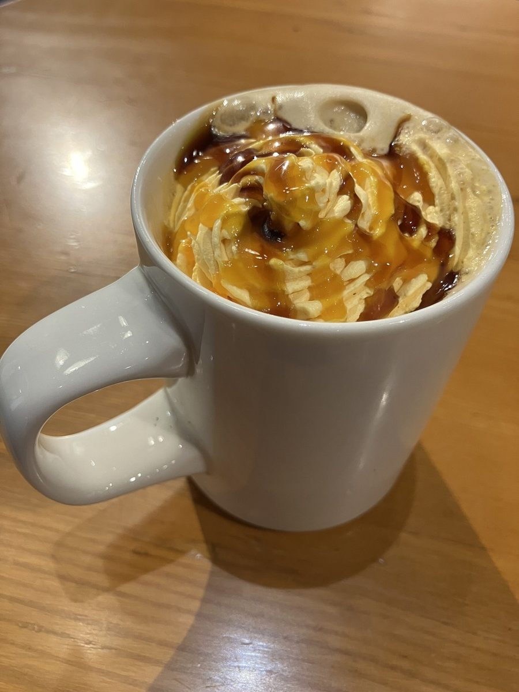
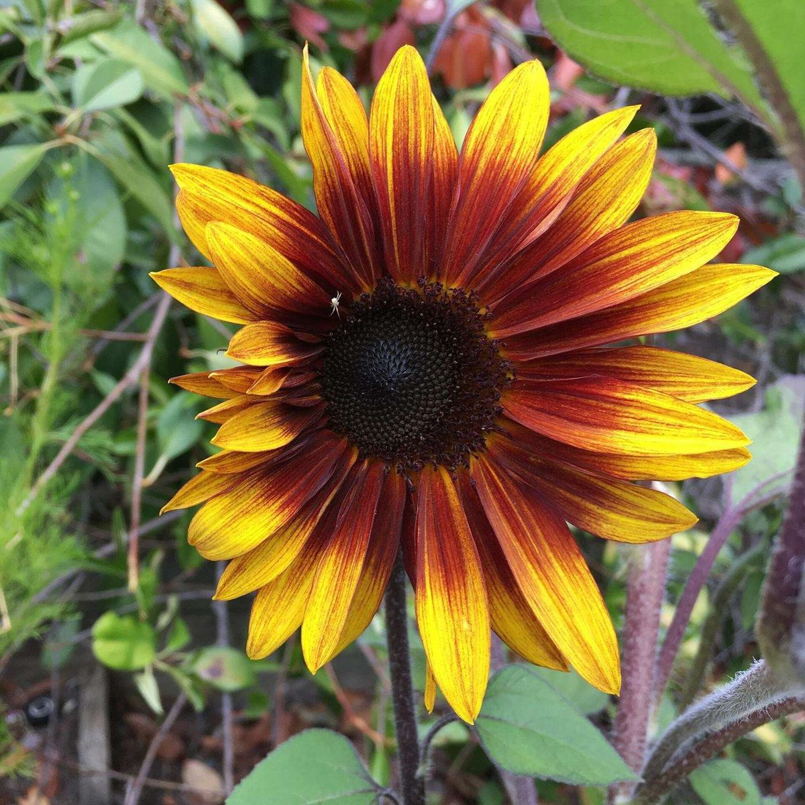

お店の想い
「頑張ってるママさんを応援」するカフェ
4Rフォアールは、2020年にオープンした三原市和田のカフェです。育児、家事、仕事と毎日頑張っているママさんを応援したいという想いから、「頑張り過ぎず、顔晴ろっ」と呼びかける、ひとりでも親子でも歓迎のお店です。
キッズスペースや座敷、遊具、絵本・おもちゃ・DVDがあり、ベビーカーでの入店も可能。ミルク用のお湯や子ども用食器の用意もあるそうです(子育て情報サイトの掲載による。詳細はお店でご確認ください)。座席は22席、駐車場は8台分とされています。
店名「4R」の意味・由来は確認できていません。ここでは触れず、お店が掲げる「ママさん応援」の想いを軸にこのページを作っています。


メニュー
確認できた範囲のご案内
キッズおまかせプレート
子ども向けのプレートが用意されているとのこと。価格など詳細は準備中。
子ども向けのプレートが用意されているとのこと。価格など詳細は準備中。
カフェメニュー
ドリンク・フードの内容は準備中。
ドリンク・フードの内容は準備中。
営業時間・定休日・価格
準備中
準備中




上の写真はフリー素材のイメージで、実際の提供メニューではありません。
口コミ
イメージ例 以下は制作側が創作したイメージで、実在の声ではありません。
イメージ例
子どもを遊ばせながら、久しぶりにゆっくりお茶ができました。
イメージ例
ひとりで行っても居心地がよく、気持ちが軽くなる場所です。
イメージ例
子ども用のお皿があって助かりました。また親子で行きたいです。



アクセス
| 所在地 | 〒723-0041 広島県三原市和田2丁目29-3 |
|---|---|
| 電話 | 準備中 |
| 営業時間 | 準備中 |
| 定休日 | 準備中 |
| @cafe4r_2020 |